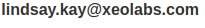

Lindsay Kay / 3D Web Developer

I’m a freelance software engineer developing WebGL-based 3D graphics solutions for BIM, CAD and medical visualization on the Web.
Originally from Christchurch, New Zealand, I’ve lived in Berlin, Germany since 2011. I graduated with a degree in computer science from the University of Canterbury in 2005. Before that, I studied electronic engineering at the Christchurch Polytechnic.
Some projects I’ve worked on:
- Built the WebGL-based 3D viewers within the BioDigital Human, BIMData, BIMSurfer and SolidComponents platforms
- Created two open source WebGL 3D engines: xeogl and SceneJS
- Contributing author on OpenGL Insights
For more info, please check out my portfolio and resume, or read some testimonials from happy clients.